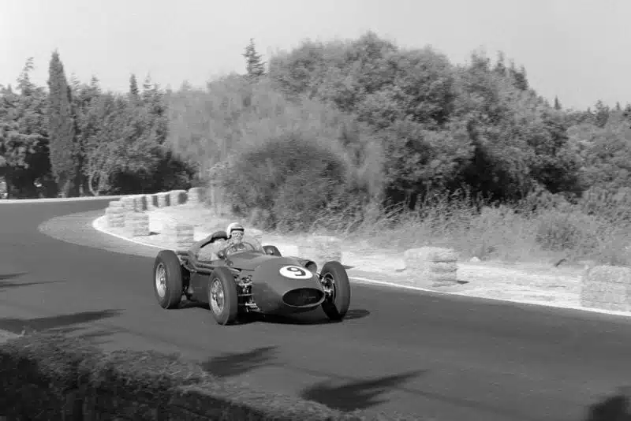
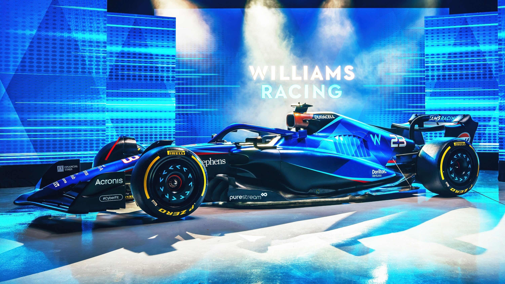
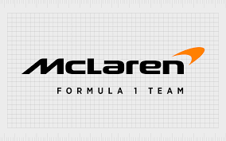
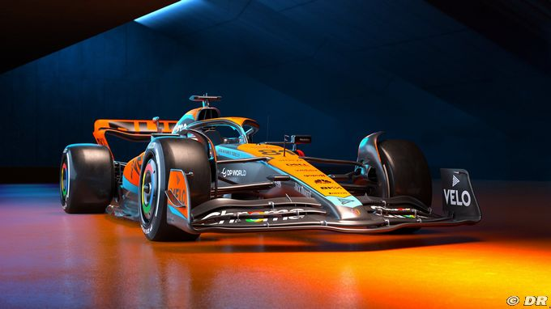
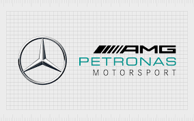
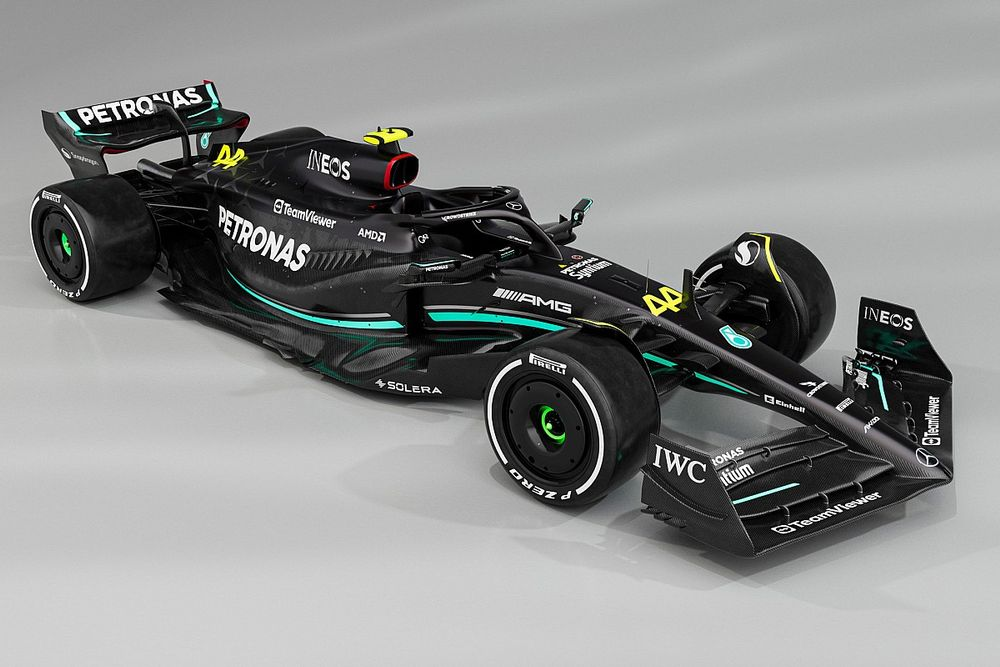

F1 always feels unreal until you arrive and get your first seat
History : -

In 1946, the Fédération Internationale de l'Automobile (FIA) was established to govern international motorsport. In 1950, the first Formula One World Championship race was held at Silverstone in the United Kingdom. Italian driver Giuseppe Farina won the inaugural championship driving for Alfa Romeo.The 1960s and 1970s saw significant advancements in technology and safety measures, as well as the emergence of iconic drivers like Juan Manuel Fangio, Jim Clark, Graham Hill, and Jackie Stewart. Manufacturers such as Ferrari, Lotus, and McLaren became prominent figures in the sport.The 1980s marked the introduction of turbocharged engines, leading to a period of intense rivalry between manufacturers such as Ferrari, McLaren, and Williams. Ayrton Senna, Alain Prost, and Nelson Piquet emerged as dominant forces on the track.he 1990s and 2000s witnessed further technological advancements, including the introduction of semi-automatic gearboxes, traction control, and advanced aerodynamics. Michael Schumacher dominated this era, winning seven World Championships with Benetton and FerrariFormula 1 expanded its reach globally, hosting races in new markets such as China, Bahrain, and Abu Dhabi. The sport also underwent significant commercialization and modernization under the ownership of Bernie Ecclestone.In 2014, Formula 1 transitioned to hybrid power units, combining internal combustion engines with energy recovery systems. Mercedes-Benz emerged as the dominant team, winning multiple Constructors' and Drivers' Championships with Lewis Hamilton behind the wheel.
Famous Teams :-
| Williams |
 |
| Full Team Name |
Williams Racing |
| Base |
Grove,United Kingdom |
| Team Chief |
James Vowels |
| Technical Chief |
Pat Fry |
| Chassls |
FW 46 |
| Power Unit |
Merchedes |
| First Team Entry |
1978 |
| World Championships |
9 |
| Highest Race Finish |
1(x114) |
| Pole Position |
128 |
| Fastest Laps |
133 |
 |
 |
| Alexander Albon (Driver) |
Logan Sarenget (Driver) |
|  |
| McLaren Formula 1 Team |
|  |
| Full Team Name |
McLaren Formula 1 Team |
| Base |
Woking, United Kingdom |
| Team Chief |
Andrea Stella |
| Technical Chief |
Peter Prodromou / David Sanchez / Rob Marshall |
| Chassls |
TBCl |
| Power Unit |
Merchedes |
| First Team Entry |
1966 |
| World Championships |
8 |
| Highest Race Finish |
1 (x183) |
| Pole Position |
156 |
| Fastest Laps |
165 |
 |
 |
| Lando Norris (Driver) |
Oscar Piastri (Driver) |
|  |
| Mercedes Petronous F1 Team |
|  |
| Full Team Name |
Mercedes AMG Petronus F1 Team |
| Base |
Brackley, United Kingdom |
| Team Chief |
Toto Wolff |
| Technical Chief |
James Allison |
| Chassls |
TBC |
| Power Unit |
Merchedes |
| First Team Entry |
1970 |
| World Championships |
8 |
| Highest Race Finish |
1 (x116) |
| Pole Position |
126 |
| Fastest Laps |
96 |
 |
 |
| Lewis Hamelton (Driver) |
George Rusell (Driver) |
|  |
| Oracle RedBull Racing F1 |
 |
| Full Team Name |
Oracle RedBull Racing |
| Base |
Milton Keynes, United Kingdom |
| Team Chief |
Christian Horner |
| Technical Chief |
Pierre Waché |
| Chassls |
TBC |
| Power Unit |
Honda RBPT |
| First Team Entry |
1977 |
| World Championships |
6 |
| Highest Race Finish |
1(x113) |
| Pole Position |
95 |
| Fastest Laps |
95 |
 |
 |
| Max Verstappen (Driver) |
Segiro Perez (Driver) |
 |
Upcoming Events